学习不走弯路，关注公众号 回复「学习路线」，获取mall项目专属学习路线！
你还在代码里做读写分离么，试试这个中间件吧！
传统的MySql读写分离方案是通过在代码中根据SQL语句的类型动态切换数据源来实现的，那么有没有什么中间件可以自动实现读写分离呢？小米开源的数据库中间件Gaea就可以实现，接下来我们将详细讲解如何使用Gaea来实现MySql的读写分离。
Gaea简介
Gaea是小米中国区电商研发部研发的基于MySql协议的数据库中间件，目前在小米商城大陆和海外得到广泛使用，包括订单、社区、活动等多个业务。Gaea支持分库分表、SQL路由、读写分离等基本特性，其中分库分表方案兼容了mycat和kingshard两个项目的路由方式。
MySql主从复制
使用Gaea需要依赖MySql的主从复制环境，关于MySql的主从复制可以参考：MySql主从复制，从原理到实践！
直接在Linux下安装
目前官方提供的是在Linux下直接安装的方式，我们先按此方法来安装Gaea。
安装Go语言环境
由于Gaea是使用Go语言编写的，所以我们需要先安装Go语言的环境。
- 安装Go语言环境，下载地址：https://golang.org/dl/
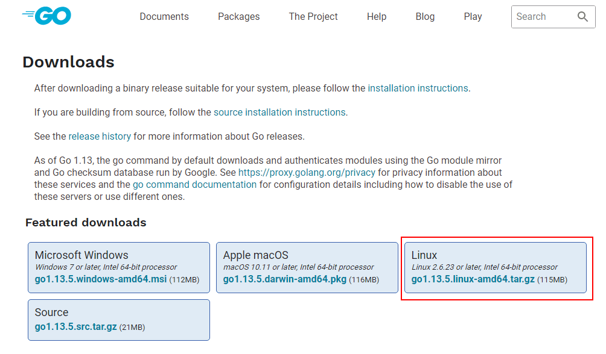
- 下载完成后解压到
/mydata目录下；
tar -zxvf go1.13.5.linux-amd64.tar.gz -C /mydata/
- 添加
/mydata/go/bin目录到PATH变量中：
# 编辑环境变量配置文件
vim /etc/profile
# 在最后一行添加
export GOROOT=mydata/go
export PATH=$PATH:$GOROOT/bin
# 刷新配置文件
source /etc/profile
- 查看版本号，测试是否安装成功：
go version
- 返回以下信息表示Go语言环境已经安装成功了：
go version go1.13.5 linux/amd64
安装Gaea
由于Gaea并没有提供安装包，所以我们需要自行编译源码获取可执行文件。
下载Gaea的源码，直接下载
zip包即可，下载地址：https://github.com/XiaoMi/Gaea将下载好的压缩包进行解压操作，这里我们解压到
/mydata/gaea/目录下：
unzip Gaea-master.zip
- 进入
/mydata/gaea/目录下，使用make命令对源码编译：
make build
注意：由于网络问题，某些Go的依赖会下载不下来导致编译失败，多尝试几次即可成功；编译完成后在
/mydata/gaea/bin目录下会生成Gaea的执行文件gaea：
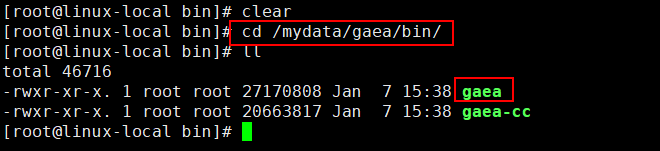
- 由于我们没有搭建
etcd配置中心，所以需要修改本地配置文件/mydata/gaea/etc/gaea.ini，将配置类型改为file：
; 配置类型，目前支持file/etcd两种方式，file方式不支持热加载
config_type=file
- 添加namespace配置文件，用于配置我们的主从数据库信息，配置文件地址：
/mydata/gaea/etc/file/namespace/mall_namespace_1.json
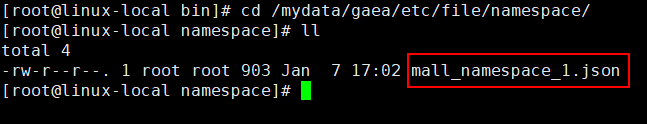
- 配置文件内容如下：
{
"name": "mall_namespace_1",
"online": true,
"read_only": false,
"allowed_dbs": {
"mall": true
},
"slow_sql_time": "1000",
"black_sql": [
""
],
"allowed_ip": null,
"slices": [
{
"name": "slice-0",
"user_name": "root",
"password": "root",
"master": "192.168.6.132:3307",
"slaves": ["192.168.6.132:3308"],
"statistic_slaves": null,
"capacity": 12,
"max_capacity": 24,
"idle_timeout": 60
}
],
"shard_rules": null,
"users": [
{
"user_name": "macro",
"password": "123456",
"namespace": "mall_namespace_1",
"rw_flag": 2,
"rw_split": 1,
"other_property": 0
}
],
"default_slice": "slice-0",
"global_sequences": null
}
namespace配置文件
namespace的配置格式为json，包含分表、非分表、实例等配置信息，都可在运行时改变。
整体配置说明：
| 字段名称 | 字段类型 | 字段含义 | | --------------- | ---------- | ------------------------------------------------------- | | name | string | namespace名称 | | online | bool | 是否在线，逻辑上下线使用 | | read_only | bool | 是否只读，namespace级别 | | allowed_dbs | map | 允许通过代理访问的数据库 | | default_phy_dbs | map | 默认数据库名, 与allowed_dbs一一对应 | | slow_sql_time | string | 慢sql时间，单位ms | | black_sql | string数组 | 黑名单sql | | allowed_ip | string数组 | 白名单IP | | slices | map数组 | 一主多从的物理实例，slice里map的具体字段可参照slice配置 | | shard_rules | map数组 | 分库、分表、特殊表的配置内容，具体字段可参照shard配置 | | users | map数组 | 应用端连接gaea所需要的用户配置，具体字段可参照users配置 |
slice配置：
| 字段名称 | 字段类型 | 字段含义 | | ---------------- | ---------- | ---------------------------------------------- | | name | string | 分片名称，自动、有序生成 | | user_name | string | 数据库用户名 | | password | string | 数据库密码 | | master | string | 主实例地址 | | slaves | string数组 | 从数据库地址，可以配置多个 | | statistic_slaves | string数组 | 统计型从实例地址列表 | | capacity | int | gaea_proxy与每个实例的连接池大小 | | max_capacity | int | gaea_proxy与每个实例的连接池最大大小 | | idle_timeout | int | gaea_proxy与后端mysql空闲连接存活时间，单位:秒 |
users配置：
| 字段名称 | 字段类型 | 字段含义 | | -------------- | -------- | ---------------------------------------------------- | | user_name | string | 数据库代理用户名，客户端通过该用户名访问 | | password | string | 数据库代理密码，客户端通过该用户名访问 | | namespace | string | 对应的命名空间 | | rw_flag | int | 读写标识, 只读=1, 读写=2 | | rw_split | int | 是否读写分离, 非读写分离=0, 读写分离=1 | | other_property | int | 目前用来标识是否走统计从实例, 普通用户=0, 统计用户=1 |
在Docker容器中运行
由于官方只提供了Linux下直接安装运行的方式，这里我们提供另一种运行方式，在Docker容器中作为服务运行。
打包成Docker镜像
Docker Hub 中并没有打包好的Gaea镜像，我们需要自行构建一个，下面详细介绍下如何构建Gaea的Docker镜像。
- 这里我们使用Dockerfile构建Docker镜像，Dockerfile中的内容如下：
# 该镜像需要依赖的基础镜像
FROM golang:latest
# 将当前目录下的gaea源码包复制到docker容器的/go/Gaea-master目录下，对于.tar.gz文件会自动解压
ADD Gaea-master.tar.gz /go/Gaea-master
# 将解压后的源码移动到/go/gaea目录中去
RUN bash -c 'mv /go/Gaea-master/Gaea-master /go/gaea'
# 进入/go/gaea目录
WORKDIR /go/gaea
# 将gaea源码进行打包编译
RUN bash -c 'make build'
# 声明服务运行在13306端口
EXPOSE 13306
# 指定docker容器启动时执行的命令
ENTRYPOINT ["/go/gaea/bin/gaea"]
# 指定维护者的名字
MAINTAINER macrozheng
- 在此之前我们需要把Gaea的源码压缩包转换为
.tar.gz格式方便在Docker容器中的解压，可以使用压缩软件来实现：
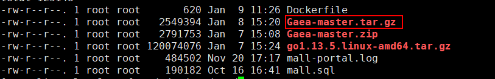
- 之后使用Docker命令构建Gaea的Docker镜像：
docker build -t gaea:1.0.2 .
- 构建成功控制台输出：
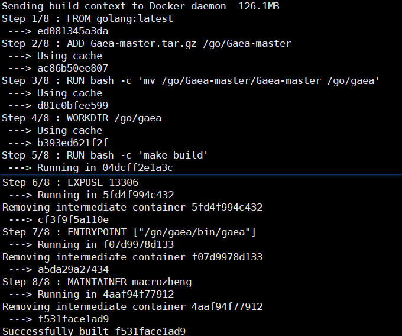
- 将本地安装的Gaea配置文件复制到
/mydata/gaea-docker/etc/目录下：
cp -r /mydata/gaea/etc/ /mydata/gaea-docker/etc/
- 使用Docker命令启动Gaea容器：
docker run -p 13306:13306 --name gaea \
-v /mydata/gaea-docker/etc:/go/gaea/etc \
-d gaea:1.0.2
测试读写分离
测试思路：首先我们关闭从实例的主从复制，然后通过Gaea代理来操作数据库，插入一条数据，如果主实例中有这条数据而从实例中没有，说明写操作是走的主库。然后再通过Gaea代理查询该表数据，如果没有这条数据，表示读操作走的是从库，证明读写分离成功。
- 通过Navicat连接到Gaea代理，注意此处账号密码为Gaea的namespace中配置的内容，端口为Gaea的服务端口；
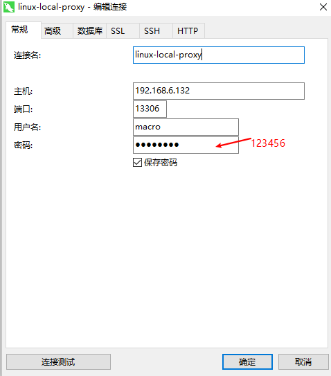
- 通过Navicat分别连接到主库和从库，用于查看数据，此时建立了以下三个数据库连接；
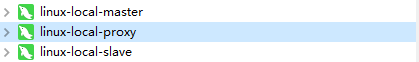
- 通过
stop slave命令关闭mysql-slave实例的主从复制功能：
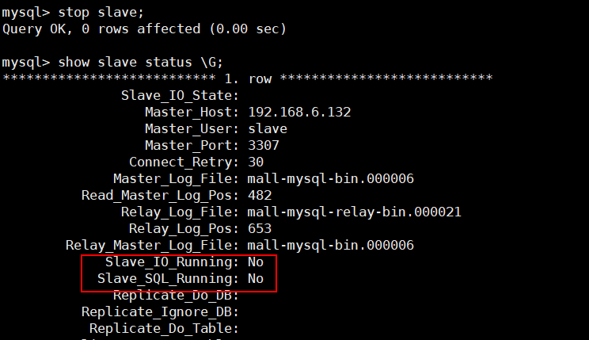
- 通过Gaea代理在
test表中插入一条数据：
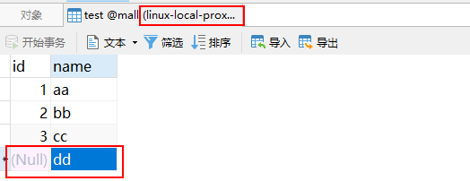
- 在主库中查看
test表的数据，发现已有该数据：
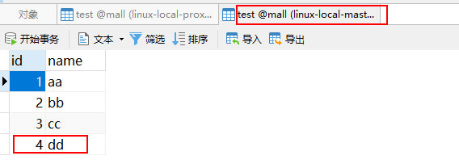
- 在从库中查看
test表的数据，发现没有该数据，证明写操作走的是主库：
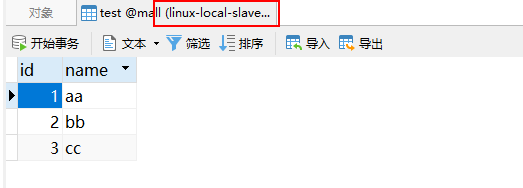
- 直接在代理中查看
test表中的数据，发现没有该数据，证明读操作走的是从库。
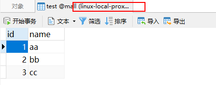
结合SpringBoot使用
在我们的SpringBoot应用中，我们只需要把Gaea的代理服务直接当做数据库服务来使用就可以实现读写分离了。这样就不用在代码中添加任何读写分离逻辑了，是不是很方便！
参考资料
更多资料请参考官方文档：https://github.com/XiaoMi/Gaea
公众号